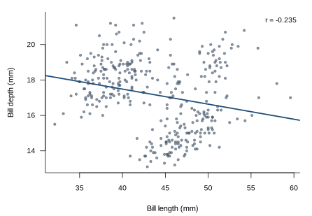
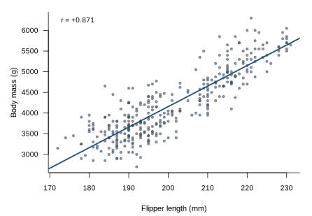
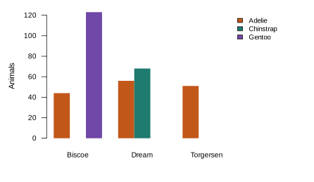

An inverse relationship between bill length and bill depth in Pygoscelis penguins
Bill morphology was recorded for 344 adult penguins of three Pygoscelis species across three islands of the Palmer Archipelago. In 342 animals with complete measurements, bill length and bill depth were inversely related (r = −0.235, p = 1.1 × 10⁻⁵): animals with longer bills tended to have shallower ones. Individual records were pseudonymised before analysis.
1 · Bill length and bill depth
Across the sample, longer bills were consistently shallower. The relationship is modest in size but clearly established, and holds over the full observed range of bill lengths from 32 to 60 mm.

2 · Flipper length and body mass
As expected, flipper length and body mass were strongly and positively related.

3 · Composition of the sample
Sampling was not balanced across islands; Biscoe and Dream each carried a single dominant species. The chart below was put together for the field log while the analysis was still running.

4 · Conclusion
In this population, bill length and bill depth vary inversely. The finding is consistent across the sampled range and we recommend that bill length be treated as an indicator of bill shape in field identification.
Data source
Horst AM, Hill AP, Gorman KB (2020). palmerpenguins: Palmer Archipelago (Antarctica) penguin data. R package version 0.1.0. doi:10.5281/zenodo.3960218Gorman KB, Williams TD, Fraser WR (2014). Ecological sexual dimorphism and environmental variability within a community of Antarctic penguins (genus Pygoscelis). PLoS ONE 9(3):e90081. doi:10.1371/journal.pone.0090081
Collected by Dr. Kristen Gorman and the Palmer Station Antarctica LTER, a member of the Long Term Ecological Research Network. Released under CC0 and used unchanged.